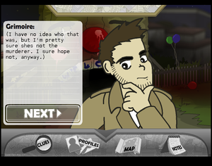

I liked to watch my brother play flash games. I didn’t have the best hand-eye coordination, and I wasn’t particularly invested in learning how to play, but I really enjoyed looking at the graphics and strategies.
We went on a lot of different websites full of games. Often they had a thriving community filled with all sorts of media, like Newgrounds. Another one that stands out in my memory is Yahoo! Games where we exhausted the limited catalogue they had. I have fond memories of many specific games from watching them.
I have fond memories of many flash games. Below is Detective Grimoire, a classic creepy murder mystery game. Below that is Shift, one of my favourite platformers that creatively plays around with inverting black and white.